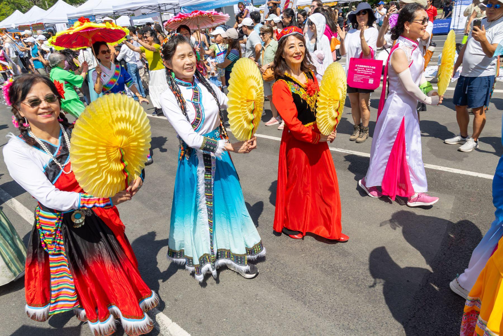

Gallery
精彩瞬间Festival Moments

第二十四届（2026年8月29日）文化节摄影组精选照片，点击可放大浏览。Selected photos from the 24th festival (August 29, 2026) by the photography team. Click to enlarge.
2027 第二十五届文化节筹备中，日期与详情将陆续公布。Planning for the 25th festival is underway. Dates and details will be announced.
Gallery

第二十四届（2026年8月29日）文化节摄影组精选照片，点击可放大浏览。Selected photos from the 24th festival (August 29, 2026) by the photography team. Click to enlarge.